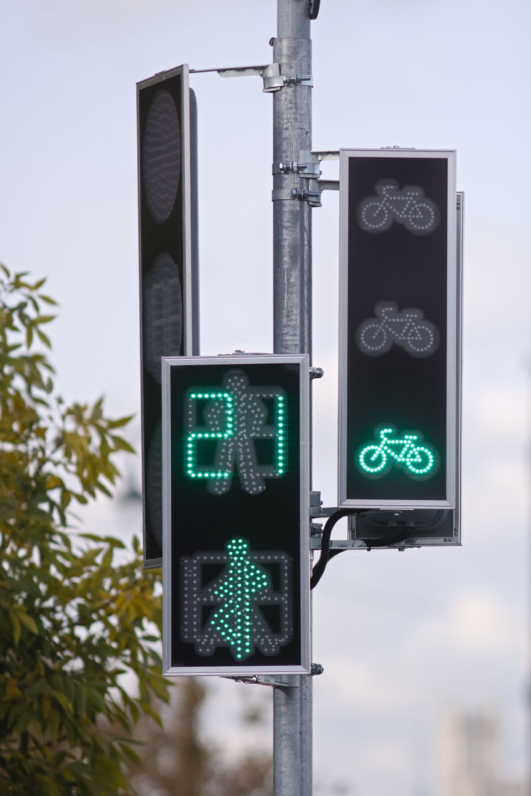

Escuela de conductores · Maipú · licencia clase B
Del cero a la licencia, sin vueltas.
Trescientas setenta y siete personas le pusieron 5,0 en Google. Acá está el camino completo —inscripción, teoría, práctica, psicotécnico y examen— con lo que hay que llevar a cada etapa y cuánto suele demorar.
- 377reseñas en Google
- 5,0de promedio: nota perfecta
- Blicencia clase B, auto particular
- L–Vde 10:00 a 18:00
La pieza que ordena el trámite
El camino, etapa por etapa.
Nadie posterga sacar la licencia por flojera: la posterga porque no sabe por dónde se empieza ni cuánto va a demorar. Esto es el orden real. Los plazos son de referencia: dependen de cuántas clases a la semana puedas tomar.
-
Inscripción
Se conversa qué licencia necesitas y cuántas clases a la semana puedes tomar. Ahí mismo queda armado tu calendario.
- Qué llevar
- Cédula vigente y certificado de estudios (enseñanza básica completa)
- Cuánto dura
- Una visita
-
Clases teóricas
Señales, normas, primeros auxilios y conducción defensiva. Se practica con las mismas preguntas del examen municipal.
- Qué llevar
- Nada: el material lo pone la escuela
- Cuánto dura
- Dos a tres semanas
-
Clases prácticas
Al volante, con instructor, en las calles donde después se rinde el examen. Los horarios se eligen clase a clase.
- Qué llevar
- Zapatos cómodos y la cédula
- Cuánto dura
- Cuatro a ocho semanas, según tu ritmo
-
Psicotécnico
Reflejos, coordinación y visión, en máquinas iguales a las de la municipalidad. Se practica antes, para que el día del examen no sea la primera vez.
- Qué llevar
- Lentes, si usas
- Cuánto dura
- Una sesión
A los 66 también se aprueba.
Varias de las 377 reseñas son de personas de más de sesenta años que sacaron la licencia por primera vez. No hay edad para empezar; hay una escuela con paciencia.
El día del examen
Tres pruebas, una mañana.
Lo que pasa en la municipalidad, en orden. Saberlo antes es la mitad del examen.
-
Teórico
Treinta y cinco preguntas
De alternativas, sobre señales y normas. Las alumnas de la escuela cuentan en sus reseñas que lo terminan en diez minutos porque practicaron con las mismas preguntas.
Se aprueba con un máximo de cuatro errores.
-
Psicotécnico
Las máquinas
Reflejos, visión y coordinación. Son las mismas máquinas que se practican en la escuela: por eso en las reseñas dicen que «fue más fácil que en la prueba».
-
Práctico
Al volante, con el examinador
Un recorrido por calles del sector: estacionar, virar, ceder el paso. Se practica en esas mismas calles durante las clases.
Lo que se obtiene
Una licencia clase B.
Habilita para conducir vehículos particulares: autos, camionetas y furgones de hasta cierto peso. Es la licencia que saca casi todo el mundo, y es la que enseña esta escuela.
- Se obtiene desde los 18 años (desde los 17 con autorización y curso, según la ley vigente).
- Los primeros dos años son de conductor principiante, con reglas más estrictas.
- Se renueva cada seis años.
Las clases
Poca gente, mucha atención.
Es una escuela chica: dos o tres personas enseñando, y eso se nota en las reseñas. Los alumnos nombran a sus profesores por el nombre y cuentan que les respondieron dudas por WhatsApp fuera de clase.
- Teóricas presenciales en la escuela, con material propio para estudiar en casa.
- Prácticas individuales, con horarios que se eligen clase a clase.
- Psicotécnico practicado en máquinas antes del examen.
Dónde está
Primera Transversal 2367-B, Maipú.
A pasos del centro de Maipú. Se puede pasar sin hora en horario de atención para conversar y ver la escuela.
- Lunes a viernes
- 10:00 – 18:00
- Sábado y domingo
- cerrado
- Clases prácticas
- en horarios a convenir, también fuera del horario de oficina
«Trescientas setenta y siete personas con licencia le pusieron cinco estrellas. Ninguna se las puso antes de aprobar.»
En la calle
Lo que se aprende de verdad.
Fotos del rubro, mientras llegan las de la escuela y su auto.

Inscribirse
Empieza con un mensaje.
Cuéntanos si partes de cero o ya sabes manejar, y cuántas clases a la semana puedes tomar. Con eso armamos tu calendario.
- +56 9 5496 0170
- Teléfono
- +56 9 8375 6422
- Dirección
- Primera Transversal 2367-B, Maipú
- Horario
- Lunes a viernes, 10:00 a 18:00
Armar el mensaje
Sin JavaScript el enlace a WhatsApp sigue funcionando. Lo único que se pierde es que el texto se arme solo.
Para el dueño
Qué es esto y qué falta.
Qué es
Una propuesta de sitio web hecha por nuestra cuenta. La escuela no la encargó ni la ha revisado. Dimos por cierto sólo lo que ya es público: las 377 reseñas con 5,0 en Google (27-08-2026), la dirección, el horario y los teléfonos que publica su página en UENI, y lo que sus alumnos cuentan en las reseñas.
Qué es ejemplo
Los documentos exactos de cada etapa, las semanas de referencia, la modalidad de las clases y las reglas del examen municipal. Todo va marcado en la página con una línea punteada. No hay precios a propósito.
El dominio con su nombre está libre
Al 04-09-2026, escueladeconductoresrutachile.cl no está registrado en NIC Chile. Hoy la escuela vive en un subdominio de UENI que no es suyo. Esta página pesa menos que una foto, no carga nada de terceros y puede quedar en ese dominio en un día.